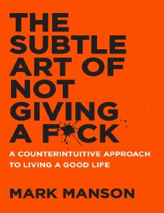

TSHayotdagi haqiqiy qadriyatlarni aniqlash va keraksiz tashvishlardan voz kechish bo'yicha qo'llanma.
Ushbu kitob an'anaviy ijobiy fikrlash usullariga qarshi chiqib, hayotdagi qiyinchiliklarni qabul qilish va haqiqatan ham muhim bo'lgan narsalarga e'tibor qaratishni o'rgatadi. Muallif muvaffaqiyatga erishish uchun o'z kamchiliklarimizni tan olish va hayotdagi og'riqli jarayonlarni anglash muhimligini ta'kidlaydi.